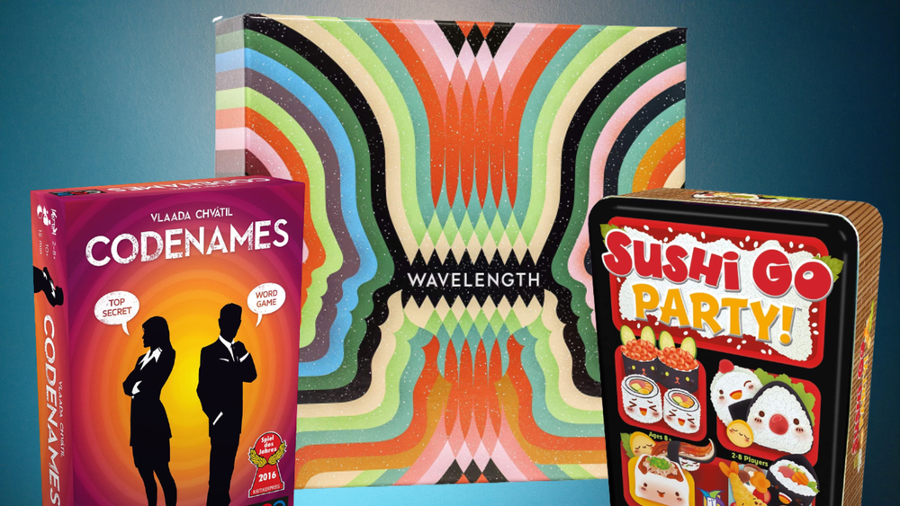
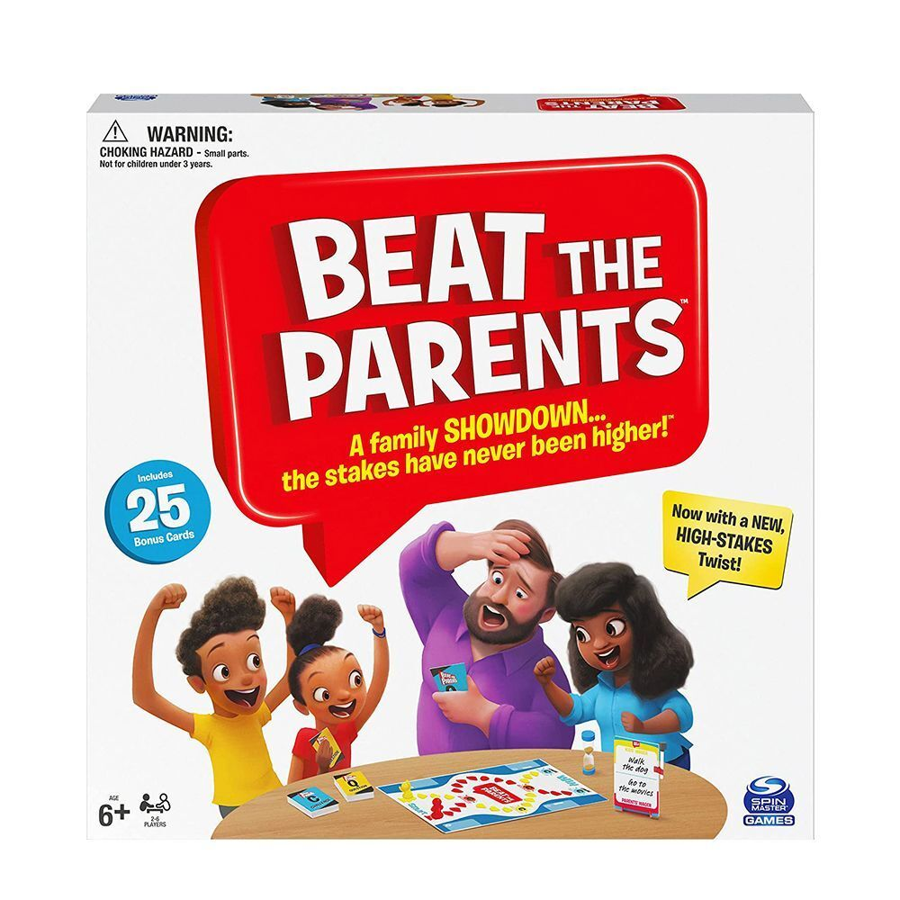

It makes sense that the popularity of board games for kids went through the roof
during quarantine and in the early days of the pandemic — families were looking
for a way to pass the time while they were stuck at home. However this type of board game not only for children.
If you don't have much time or you don't want to learn difficult rules - children's game is for you.

Party games
If you're looking for tips on being the life of the party, look no further.
Picture this scene. Everyone is happily chatting, looking relaxed, maybe some are inebriated.
“Who wants to play a game!?” you inquire. It appears no one wants to speak over one another, so they all remain silent.
Than you say with trembling voice: "I brought party games. Everyone can play!.”
The crowd goes wild as partygoers rush to the table, eager to grab a spot.
You are loved.
Deduction games
Deduction games are those that require players to form conclusions based on available premises.
Cat & Mouse games like Scotland Yard are a type of Deduction game in which players use a set of observations
and truthful feedback to narrow down possibilities and catch a constantly moving opponent at the right position.
Elimination games like Clue expect players to arrive at the right conclusion after narrowing
down possibilities from a large list.

Family games
Board games can teach cooperation, communication and problem-solving skills.
And they're a great way to spend time with friends and family. Board games for families have come a long, long way since Monopoly.
Sure, it may still be the first one that comes to mind, but there's no shortage of choice these days.
You'll be grateful to have a game on hand that doesn't require technology — one that everyone in your fam can agree on.